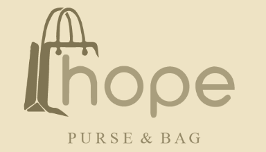

<!-- Navbar -->
<nav class="navbar">
  <div class="navbar-container">
    <!-- Logo -->
    <a href="/" class="navbar-logo">
      
    </a>

    <!-- Menu Items -->
    <ul class="navbar-menu">
      <li><a href="/">Inicio</a></li>
      <li><a href="../pages/about.html">Acerca de</a></li>
      <li><a href="../pages/products.html">Productos</a></li>
      <li><a href="../pages/contact.html">Contacto</a></li>
    </ul>

    <!-- Cart Icon -->
    <div class="navbar-cart">
      <a href="../pages/cart.html">
        <i class="fas fa-shopping-cart"></i>
        <span class="cart-count">0</span>
      </a>
    </div>

    <!-- Hamburger Menu Button -->
    <button class="hamburger-btn">
      <i class="fas fa-bars"></i>
    </button>
  </div>
</nav>

<!-- Sidebar Overlay -->
<div class="sidebar-overlay"></div>

<!-- Sidebar -->
<div class="sidebar">
  <button class="close-btn">&times;</button>
  <div class="sidebar-content">
    <a href="/" class="sidebar-logo">
      
    </a>
    <ul class="sidebar-menu">
      <li><a href="/">Inicio</a></li>
      <li><a href="../pages/about.html">Acerca de</a></li>
      <li><a href="../pages/products.html">Productos</a></li>
      <li><a href="../pages/contact.html">Contacto</a></li>
    </ul>
    <div class="sidebar-cart">
      <a href="../pages/cart.html">
        <i class="fas fa-shopping-cart"></i>
        <span class="cart-count">0</span>
      </a>
    </div>
  </div>
</div>

<!-- Vincular el archivo CSS específico del navbar -->
<link rel="stylesheet" href="../assets/css/components/navbar.css">
<!-- Vincular Font Awesome -->
<link rel="stylesheet" href="https://cdnjs.cloudflare.com/ajax/libs/font-awesome/5.15.4/css/all.min.css">

<!-- Script para el menú responsive -->
<script>
  document.querySelector('.hamburger-btn').addEventListener('click', function() {
    document.querySelector('.sidebar').classList.add('open');
    document.querySelector('.sidebar-overlay').classList.add('active'); // Activa la superposición
  });

  document.querySelector('.close-btn').addEventListener('click', function() {
    document.querySelector('.sidebar').classList.remove('open');
    document.querySelector('.sidebar-overlay').classList.remove('active'); // Desactiva la superposición
  });

  // Cerrar el menú cuando se haga clic en la superposición
  document.querySelector('.sidebar-overlay').addEventListener('click', function() {
    document.querySelector('.sidebar').classList.remove('open');
    document.querySelector('.sidebar-overlay').classList.remove('active');
  });
</script>